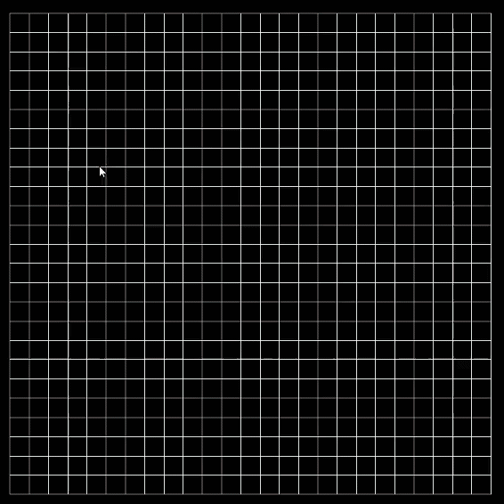
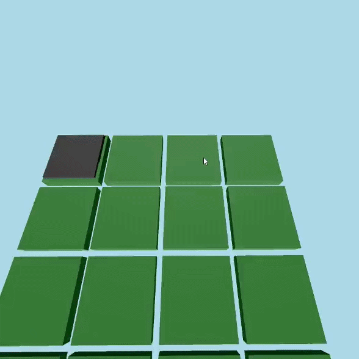

Nathan Flesch - Développeur C/C++
Étudiant à Gaming Campus Lyon, filière G.Tech Moteur.
Je réalise actuellement ma 3ème et dernière année de Bachelor. J'envisagerai une spécialisation de 2 ans pour obtenir un Mastère.
Je conçois de nombreux projets en solo ou en groupe mettant à l'épreuve la partie théorique grâce à un cahier des charges complet et exigeant.
Nous avons réalisés 3 projets en interdisciplinarité avec d'autres filières comme Art et Business dans des équipes de 10 à 20 personnes.
En d'autres termes, cet enseignement me permet de projeter dans le monde du travail en ayant des contraintes et attentes similaires.
Pendant mon temps libre, j'aime coder des projets personnels, passer du temps avec mes amis, jouer aux jeux-vidéo et faire du piano.
Github: nf73-GC est mon compte école et nf73-sshi est mon compte personnel
Jeu d’Horreur Enigme Parkour à la première personne dans un asile psychiatrique.
Jouable clavier et manette, une aventure linéaire où l'objectif est de fuir le sujet P5YCH0 qui rôde.
Développé en 5 semaines en trio (Méthode Waterfall + Kanban) sur notre propre moteur, le NAM Engine.
Ce moteur C++ utilisant l'API DirectX12 et basé sur un Entity Component System (ECS) a été développé en 7 semaines en trio (autres personnes).
Ce jeu met à l'épreuve les performances du NAM Engine ainsi que l'utilisation de son ECS dans un projet concret.
Jeu de Plateforme 2D Pixel Art dans le style Solarpunk avec un système de niveaux.
Le robot possède une ruée, un pistolet à bulles pour hydrater la végétation et un désherbant pour éliminer les plantes nocives.
Développé en 2 semaines en interdisciplinarité (5 Devs, 3 Arts, 2 Business) sur un moteur fourni au préalable (Light Engine).
Ce moteur a du être amélioré pour subvenir aux attentes du jeu (AssetManager, StateMachine, Animations, SFX).
Jeu mobile de hockey sur glace jouable à 2, inspiré des jeux de palet dans les salles d'arcade.
Le joueur 1 choisit des pions à déplacer et leur donne une force (dans le but de marquer). Le joueur 2 fait de même.
Chaque joueur doit cacher ses actions, les 2 joueurs regardent ensuite les actions s'effectuer en même temps.
L'objectif de ce jeu est de créer des stratégies pour marquer et bloquer son adversaire en anticipant ses choix.
Développé en 2 semaines seul sur Godot Engine et conçu pour être joué avec un ami pour passer le temps.
Toujours en cours de développement et d'ajout de nouveau contenu comme un mode de jeu avec des sorts.


Simulation A* (algorithme de recherche du chemin le plus court) de divers agents dans une grille éditable de taille variable.
Les agents oranges se baladent aléatoirement, les rouges vont à la destination des oranges pour les manger.
Une version 3D (branche Main-3D sur Github) ajoute la hauteur, un agent ne peut franchir qu'1 seule case de hauteur par déplacement.
Les contrôles sont écrits dans le fichier main.cpp de chaque version du projet
Développé en 2 semaines en Duo en C++ sur un moteur fourni (Light Engine) où la structure du Pathfinding a dû être implémentée.
Email : nathanf7006@gmail.com
LinkedIn